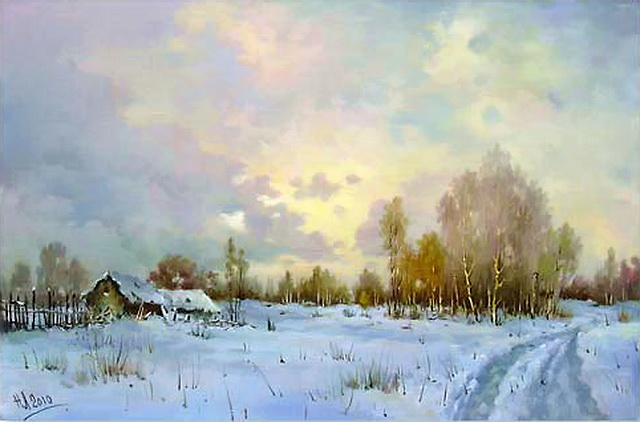
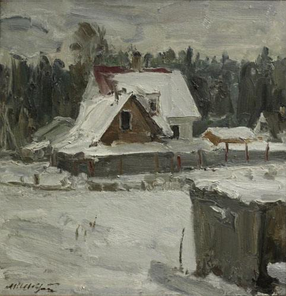
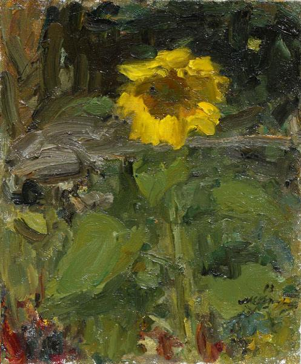
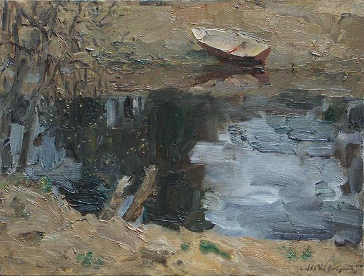

Живопис
Луговенко Микола
Луговенко Микола Володимирович народився в 1944 році в
м. Нікополь Дніпропетровської області, Україна.
Пристрасть до малювання виявилася ще в ранньому дитинстві і стала його справжнім покликанням і професією в дорослому житті. Під
час проходження служби в армії Миколу Луговенка, як обдарованого художника запросили в майстерню Мартіраса Сергійовича Сар'яна, і з того моменту Луговенко став учнем 90 -річного Сарьяна. Навчання продовжилося два з половиною роки. Паралельно Микола Володимирович займався образотворчим мистецтвом в студії при будинку народної творчості під керівництвом народного художника Вірменії Хачина Врутюновіча Мурадяна.
Після проходження служби Луговенко повернувся в рідне місто, де став займатися в арт-студії під керівництвом Овчаренко Я. М. Вже тоді його роботами зацікавилися мистецтвознавці і колекціонери.
 |
 |  |
Незвичайна палітра, філігранна техніка, властива класикам XIX століття, дивовижне відчуття простору, чуття кольору і світла, вміння побудувати композицію і перспективу, вигідно виділяли його роботи на всіх виставках, в яких він брав участь. Перші виставки Н.В. Луговенка проходили в рідному Нікополі, а також в Енергодарі та Дніпропетровську. Далі був Київ, Ленінград, Москва. Після розпаду СРСР про Луговенка дізналися і в Європі.
Шевченко Михайло
Михайло Сергійовий Шевченко народився 1963 року в селі Веселе, Красногвардійського району, Бєлгородської області, служив у Збройних силах, закінчив Одеське театрально-художнє технічне училище, працював декоратором у Ворошиловградському драматичному театрі, закінчив у 2000 році Санкт-Петербурзький державний академічний інститут живопису, скульптури та архітектури імені І.Є. Рєпіна.
Член Спілки художників Росії. Учасник численних виставок Санкт-Петербурзького відділення художників і за кордоном. Твори знаходяться в Тульському музеї образотворчих мистецтв, Калузькому обласному художньому музеї, Державному меморіальному історико-мистецькому та природному музеї- заповіднику В.Д. Полєнова, Серпуховском історико-художньому музеї, Тарусские картинній галереї.
|  |  |  |
Персональні виставки: Музей І.І. Бродського ( філія Науково-дослідного музею Російської Академії мистецтв) Санкт -Петербург, Виставковий центр Санкт-Петербурзького відділення Спілки художників, Тульський музей образотворчих мистецтв. Нагороджений Подячним листом Тульської обласної Думи, Подячним листом Тульського музею образотворчих мистецтв, Дипломом першого фестивалю «Білі ночі».
Назад Вгору